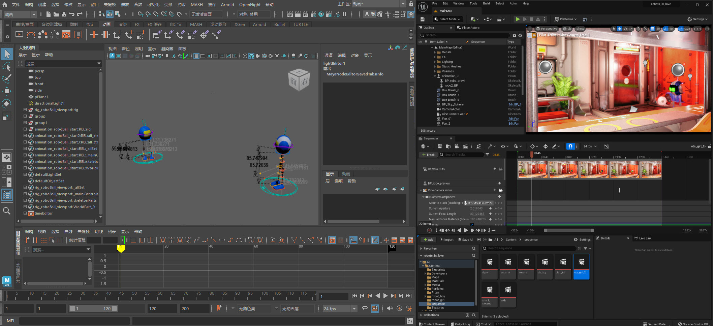
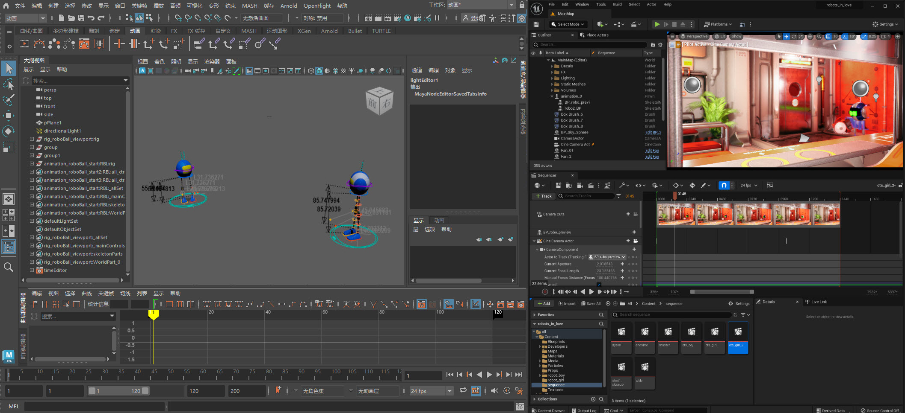

欢迎使用适用于 Maya 的 Unreal Live Link
通过适用于 Autodesk® Maya® 的 Unreal® Live Link，可以将动画数据从 Maya 实时流式传输到 Unreal，让您可以在 Maya 中处理角色资产，并在进行更改的同时在 Unreal 中查看工作的预览。


通过适用于 Autodesk® Maya® 的 Unreal® Live Link，可以将动画数据从 Maya 实时流式传输到 Unreal，让您可以在 Maya 中处理角色资产，并在进行更改的同时在 Unreal 中查看工作的预览。
